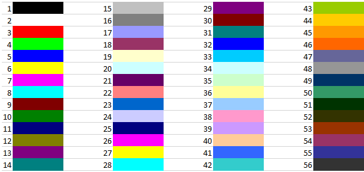

Private Sub CommandButton1_Click()
For i = 1 To 20
Cells(i + 1, 2).Value = Cells(i + 1, 1).Interior.ColorIndex
Cells(i + 1, 3).Value = Cells(i + 1, 1).DisplayFormat.Interior.ColorIndex
' Cells(i + 1, 4).Value = Cells(i + 1, 1).Pattern
' Cells(i + 1, 5).Value = Cells(i + 1, 1).PatternColorIndex
' Cells(i + 1, 6).Value = Cells(i + 1, 1).ThemeColor
' Cells(i + 1, 7).Value = Cells(i + 1, 1).TintAndShade
' Cells(i + 1, 7).Value = Cells(i + 1, 8).PatternTintAndShade
Next i
End Sub
' .Pattern = xlSolid
' .PatternColorIndex = xlAutomatic
' .ThemeColor = xlThemeColorDark1
' .TintAndShade = -0.149998474074526
' .PatternTintAndShade = 0
VBA Excel. Цвет ячейки (заливка, фон) (vremya-ne-zhdet.ru)
|
Предопределенная константа |
Наименование цвета |
|
vbBlack |
Черный |
|
vbBlue |
Голубой |
|
vbCyan |
Бирюзовый |
|
vbGreen |
Зеленый |
|
vbMagenta |
Пурпурный |
|
vbRed |
Красный |
|
vbWhite |
Белый |
|
vbYellow |
Желтый |
|
xlNone |
Нет заливки |
VBA Excel. Цвет текста (шрифта) в ячейке (vremya-ne-zhdet.ru)
